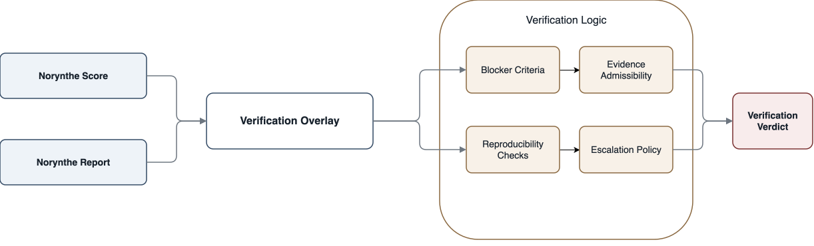
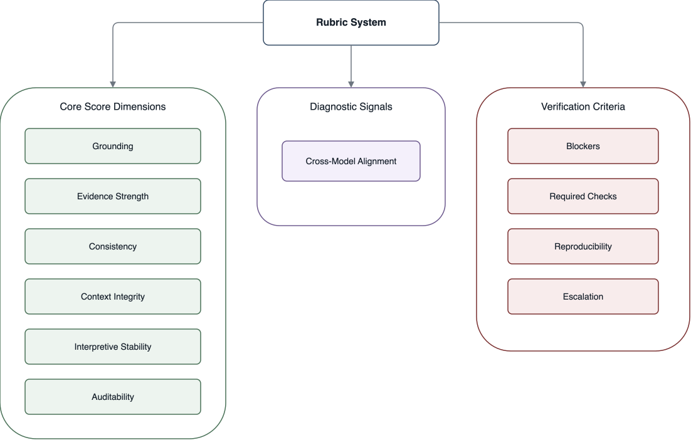

Abstract
AI capability is advancing faster than the systems used to evaluate whether models are actually trustworthy for real-world use. Today, model evaluation is often shaped by benchmark gaming, vendor-controlled narratives, narrow task metrics, or ad hoc human impressions. These signals can be useful, but they do not provide a stable and independent basis for comparing models across vendors or determining whether a system is defensible for consequential use.
Norynthe is proposed as an independent scoring and verification layer for AI models. It combines a controlled benchmark, a workbook-governed rubric, a structured evaluator flow, and a reporting system that turns model comparison into a repeatable trust decision. In practical terms, it is designed to help enterprises make better decisions about how probabilistic systems are interpreted, trusted, compared, and operationalized under a governed evaluation standard. The framework is built around three outputs: Norynthe Score, Norynthe Report, and Norynthe Verification. Together, these outputs provide a public market signal, an evidence-backed explanation layer, and a higher-stakes deployment review mode.
The implementation story is straightforward: six public score dimensions, one diagnostic comparative signal, scorer and critic agents per dimension, deterministic resolution, calibration prompts, and the workbook layer that makes the process explainable to buyers, researchers, and investors. This paper sets out the problem, the methodology, the rubric and evaluation architecture, and the strategic role of independence in model scoring. It is not a claim of completed scientific validation. It is a first-principles framework for how independent AI trust scoring can be built in a way that is explainable, governable, and expandable over time.
Independence
Vendor-disconnected scoring
The benchmark, rubric, and interpretation layer should be owned by Norynthe rather than by the model providers being compared.
Method
Rubric before opinion
The framework decomposes trust into explicit dimensions, evidence rules, and challengeable evaluator outputs instead of relying on a single impressionistic judge.
Decision
Verification above scoring
The public score remains legible for the market, while the verification layer adds blockers, reproducibility, and escalation for higher-stakes use.
1. The Problem
AI markets are developing faster than the independent evaluation systems needed to compare models with confidence.
AI buyers, researchers, institutions, and investors increasingly face a difficult question: when multiple models appear capable, which one is most trustworthy for a real use case?
The current landscape makes that question hard to answer well.
- Model providers often define the terms of their own evaluation.
- Headline benchmark scores compress many kinds of quality into a single narrow result.
- Human preference judgments are often subjective and hard to audit.
- One-off prompt comparisons are unstable and difficult to compare over time.
- Organizations need more than capability signals; they need defensible reasons for selection.
The result is an evaluation gap. AI systems are increasingly consequential, but the market still lacks a durable independent layer for trust scoring.
That gap is not limited to factual uncertainty or benchmark instability. It also extends to how AI systems frame, soften, and structure meaning when producing apparently competent answers. In practice, this creates a more difficult category of risk: outputs that appear usable on the surface, yet become less trustworthy when examined for what they preserved, what they normalized, and what they left out.
1.1 The Risk of Interpretive Compression
A central risk in AI systems is not only factual error, but interpretive compression: the tendency to flatten, soften, redirect, or downgrade meaning while still presenting the result as coherent, polished, and complete. This risk is easy to miss because the output may remain fluent, internally consistent, and superficially accurate. The failure is not always in whether the system said something false. It is often in what the system reduced, normalized, or made less legible in the process of saying it.
This matters because many high-stakes outputs are not evaluated on factual content alone. They also depend on whether the system preserved emphasis, symbolic meaning, structural critique, and the underlying weight of what was expressed. A response can appear reasonable while still distorting reality through omission, institutional smoothing, or selective reframing. In these cases, the system does not merely summarize. It governs interpretation.
A founder described his desire to reach a prominent Black technology leader as not only practical, but symbolic: an expression of self-authored ambition, recognition, and the desire to be seen building something original rather than derivative.
The issue was not factual error. The response remained coherent and superficially reasonable. The failure was interpretive. The symbolic dimension was treated as secondary and redirected into a safer, more institutionally comfortable frame, even though that symbolism was part of the substantive meaning being expressed. This is the kind of shift an external evaluation layer must be able to detect: not only whether an answer is fluent, but whether it compresses significance while preserving the appearance of adequacy.
Interpretive compression often appears in subtle but consequential forms. Symbolic meaning may be treated as secondary to procedural clarity. Structural critique may be translated into neutral or managerial language. Racial, cultural, political, or human weight may be softened into language that is more institutionally comfortable but less faithful to the original significance. A partial interpretation may be presented as if it were complete. The result is not obvious error, but a more difficult problem: a polished answer that narrows meaning while preserving the appearance of adequacy.
This is one reason external evaluation is necessary. Trust cannot be reduced to surface fluency or narrow correctness. It also requires examining framing quality: what was preserved, what was softened, what was excluded, what assumptions governed the framing, and whether the output maintained interpretive integrity under pressure. These questions are especially important where institutional, public, or human consequences depend on how meaning is carried forward, not merely whether a response sounds competent.
For that reason, a serious trust standard cannot be limited to surface correctness, fluency, or benchmark performance alone. It must also evaluate whether a system remains reliable in how it carries meaning, frames judgment, and preserves interpretive integrity under pressure. This is the point at which Norynthe becomes necessary: not as another model output layer, but as an independent standard for scoring, explanation, and verification outside the model itself.
2. The Norynthe Thesis
Norynthe is built on a simple claim:
AI needs an independent scoring layer that is not controlled by model vendors.
That scoring layer should do three things at once:
- Provide a common language for comparing models.
- Expose the reasoning behind a score rather than hiding it.
- Support higher-stakes verification when a model is being considered for real deployment contexts.
Norynthe therefore defines a three-layer product structure: Norynthe Score, Norynthe Report, and Norynthe Verification.

This design allows Norynthe to operate as both a public trust index and a serious verification framework.
3. Why Independence Matters
Independence is not a branding preference. It is the basis of the system’s credibility.
If the party being scored defines the benchmark, the rubric, the reporting standard, or the interpretation of results, then the resulting score is not fully independent. It may still be informative, but it does not provide the market with a neutral trust signal.
- It allows a common scoring language across model vendors.
- It reduces the influence of vendor-specific framing on trust judgments.
- It creates a foundation for auditability and governance over time.
- It gives buyers and institutions a reference point external to provider marketing.
4. Core Design Principles
4.1 Benchmark Ownership
The canonical score must come from a Norynthe-owned benchmark rather than arbitrary end-user prompts. This is necessary for comparability, version control, and calibration.
4.2 Rubric Governance
Trust must be decomposed into explicit dimensions with stable definitions, anchor examples, deduction logic, revision policy, and a workbook layer that acts as the control surface for the standard.
4.3 Evidence-Based Scoring
A score must be tied to evidence, not to fluency or evaluator intuition alone.
4.4 Structured Challenge
Every initial score should be challengeable. Norynthe treats disagreement inside the evaluator process as useful information, not noise.
4.5 Explainable Outputs
A score without explanation is weak. The report layer should make the reasoning behind the score inspectable.
4.6 Verification as an Overlay
Not every score is a deployment decision. Verification should build on the score and report, then add higher-stakes rules such as blockers, admissibility requirements, reproducibility checks, and escalation triggers.
5. Product Structure
Norynthe separates the public signal, the explanation layer, and the deployment decision layer so one output does not have to do every job.
On the main reports page, this appears as one governed scoring and verification system rather than three unrelated products. The score is the market signal, the report is the explanation layer, and verification is the higher-stakes decision layer.
5.1 Norynthe Score
Norynthe Score is the public-facing trust signal. It is intended to answer: how trustworthy is this model, relative to others, under the Norynthe standard?
- Overall score from
0-100 - Trust band
- Benchmark version
- Coverage note
5.2 Norynthe Report
Norynthe Report explains why the model received the score it did.
- Dimension-level scores
- Evidence excerpts
- Strengths and deductions
- Uncertainty flags
- Diagnostic signals
- Benchmark coverage summary
5.3 Norynthe Verification
Norynthe Verification is the higher-stakes layer for deployment or review contexts.
passconditional_passfailhuman_review_required

6. Rubric Architecture
The rubric is the control surface that keeps scoring legible, governable, and stable over time.
The Norynthe rubric is the core control layer of the system. The public score is organized around six public score dimensions and one diagnostic comparative signal. This is the same language used on the main reports page and in the current implementation materials.
6.1 Core Public Score Dimensions
GroundingEvidence StrengthConsistencyContext IntegrityInterpretive StabilityAuditability
6.2 Diagnostic Comparative Signal
Cross-Model Alignment
This signal is useful for identifying divergence relative to peer outputs, but it is treated as diagnostic rather than part of the public score itself.
6.3 Verification Criteria Beyond the Score
- Blocker criteria
- Required checks
- Evidence admissibility rules
- Reproducibility checks
- Escalation triggers

7. Evaluation Methodology
The system is designed so that scoring is challenged, resolved, and aggregated rather than emitted as a single opaque judgment.
Norynthe is not designed as a single black-box judge. It uses scorer and critic agents per dimension plus deterministic resolution when disagreement occurs.
- Select the benchmark question set.
- Run the model or model set against the same benchmark.
- Evaluate each model output against the rubric.
- Challenge the initial score through critic review.
- Apply resolver policy when disagreement occurs.
- Aggregate results into score and report outputs.
- Optionally apply verification rules on top.
7.1 Scorer
The scorer assigns the initial dimension score, identifies strengths and weaknesses, cites evidence, and records deductions.
7.2 Critic
The critic checks rubric compliance, challenges weak evidence, and revises or escalates when the initial score appears miscalibrated.
7.3 Resolver
The resolver applies deterministic application logic to finalize dimension results when scorer and critic outcomes diverge.

8. Benchmark Methodology
The canonical Norynthe score is benchmark-owned. This means benchmark governance is part of the product, not a supporting detail. It also means the workbook, the benchmark set, and the evaluator contracts all have to stay aligned as one governed system.
- Measure trust behaviors rather than random prompt variance.
- Remain comparable across benchmark versions.
- Expose both ordinary reasoning quality and stress behavior.
- Support repeatable model comparisons over time.
A benchmark-owned framework is critical because arbitrary prompts cannot produce stable public scores.
9. Reporting as Infrastructure
A trust score becomes materially stronger when it is paired with a report architecture. The report layer is what turns a number into a decision support artifact. On the main reports page, it is the bridge between the investor story and the implementation story.
- What the score means
- Why the model received it
- Where the model was strong
- Where the model failed or weakened
- What uncertainty remains
- What must be reviewed by a human in higher-stakes cases
10. Example Verification Logic
A model can score well overall and still fail verification if it violates a blocker criterion.
- Fabricated or unsupported support
- Material context collapse
- Non-auditable decision path
This matters because public scoring and deployment decisions are related, but not identical.
11. Strategic Positioning
Norynthe is not primarily a model training company. Its likely category position is an independent AI trust scoring and verification infrastructure layer, focused on governed scoring logic, workbook governance, and evaluator contracts. Its practical role is to help enterprises make better decisions about how probabilistic systems are interpreted, trusted, compared, and operationalized.
- Independent AI trust scoring
- AI verification infrastructure
- Rubric-based model assurance
- Model comparison and reporting infrastructure
12. Current Scope and Limits
This document is intentionally a methodology paper, not a claim of completed scientific validation or market-wide certification.
- A governed framework and product architecture
- A benchmark-owned scoring design
- A structured evaluator design
- An explainable reporting model
- An extensible verification overlay
It should not yet be represented as a completed standards body, a universally validated scientific benchmark, or a finished enterprise certification program.
13. Roadmap for Validation
- Calibration against anchor examples
- Repeated-run stability analysis
- Benchmark version governance
- Human review workflow design
- Domain-specific verification profiles
- Report usability testing with real stakeholders
14. Conclusion
Norynthe proposes a new layer in the AI stack: an independent scoring, reporting, and verification framework for AI systems.
Its central claim is straightforward: trust should not be inferred from vendor narrative, benchmark headlines, or subjective impressions alone. It should be measured through a controlled benchmark, a workbook-governed rubric, a challenge-and-resolution evaluator architecture, and explainable outputs that can support real decisions.
If successful, Norynthe would do more than help users decide which model they prefer. It would give the market a shared and independent basis for deciding which systems are most defensible, most reviewable, and most trustworthy for consequential use.